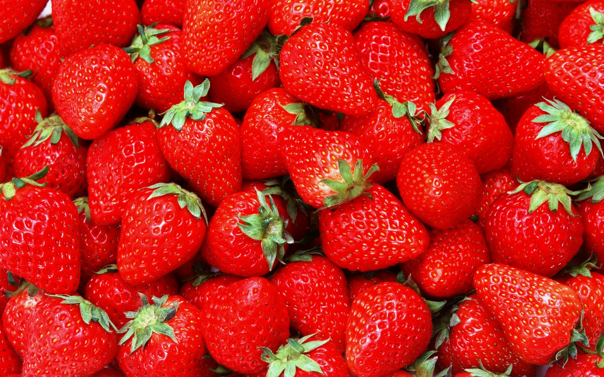

Taste The Rainbow
There are so many ways you can discover the vibrant flavors and health benefits of a variety of fruits. Try This recipe out when you get the chance
Read MoreFeel the Difference
Learn how incorporating fruits into your diet can improve your overall well-being.
Read More

Reduce your risk of cancer and stroke by adding strawberries to your diet. These little red
devils are known to make you feel angelic.
Make a Face mask!
Lemon Apple Face Mask for Oily Skin 1 tablespoon (16 g) applesauce 1 teaspoon (5 ml) fresh lemon juice 1 teaspoon (1 g) dried sage
About the author
- Name: Peaxchi
- Title: Crochet artist
- School: Udacity
- Short bio: I live in a magical place called Florida with no children and 2 Cats. I crochet when I'm not spreading the amazing word on fruit.
Connect with me on social media: